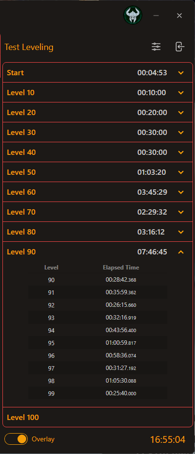
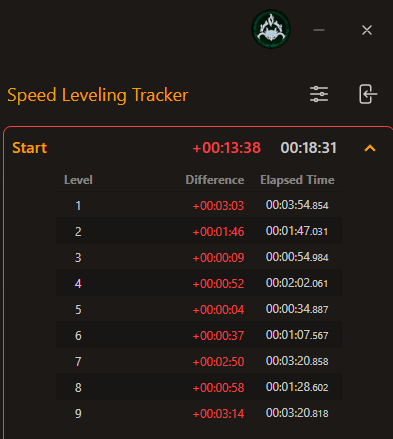
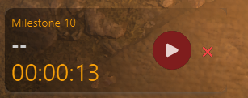
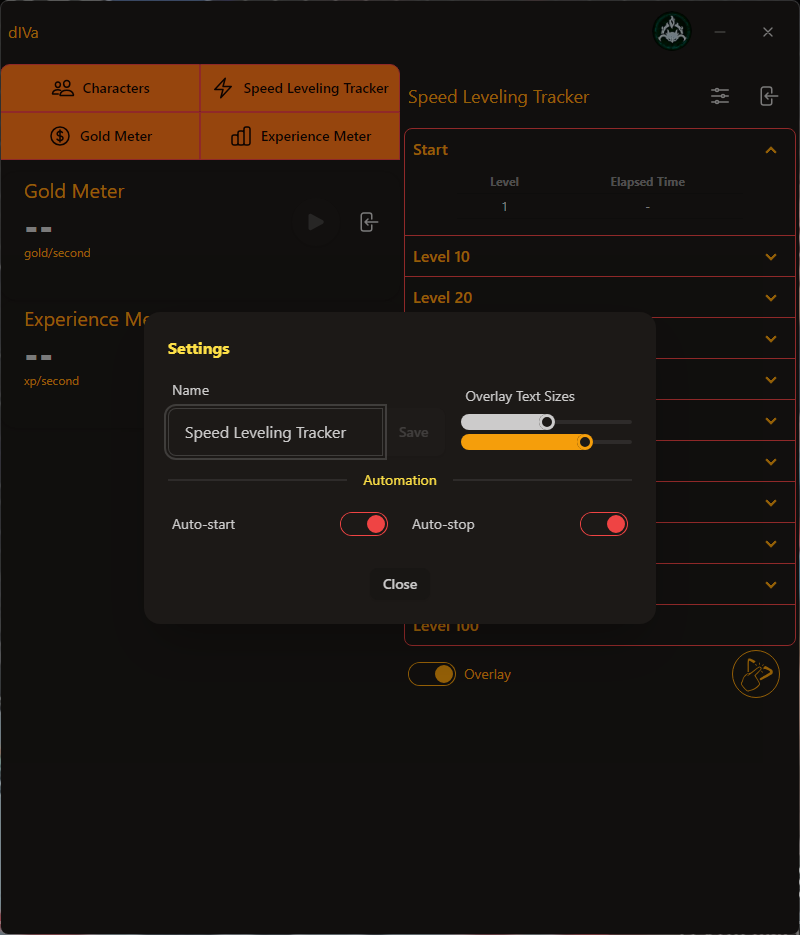

Speed Leveling Tracker
Screenshot of the Speed Leveling Tracker window.

Functionality
-
Milestones: Displays milestones along your leveling journey.
- Total Time: The time taken within the milestone; accumulative of all the levels.
- Level Breakdown: Shows the elapsed time for each level within the milestone.
- Elapsed Time: Displays the elapsed time for each level individually.
- Progress Tracking: Tracks the time taken to reach each milestone and displays it in an expandable list.
- Control Button: Includes a play/pause button to start or stop the timer.
"Best Run" Compare
-
Time Comparison: The Best Run feature allows users to compare their current time with their best (fastest) run for
that milestone and levels.
-
Color-coded Feedback: The elapsed time is color-coded to provide immediate feedback. Green indicates you are faster
than your best run, while red indicates you are slower.
-
Offline Progress Exclusion: If you have leveled offline, your completed run will not qualify to be stored as your
"Best Run". The Best Run is reserved for the automated leveling progress since it is more precise and provides the full leveling
detail.

Leveling Overlay
The Leveling Overlay provides a clear visual interface in-game to track your leveling progress in real-time. It includes essential
information and controls for managing your leveling milestones efficiently.
-
Milestone Display: Indicates the current milestone in your leveling journey. The milestone number updates automatically
as you progress.
- Total Elapsed Time: The overlay shows the total time elapsed since the start of the leveling progress.
-
Control Buttons: The Play/Pause button allows you to start or stop the timer manually. When the timer is running, the
button will show as a pause icon, and it switches to a play icon when paused.
-
Close Button: A red "X" button is provided to close the overlay at any time, allowing users to hide it if they don't
need the overlay displayed constantly.
-
Next Button: A yellow "forward" button is provided when leveling offline to indicate when the milestone is complete,
and next milestone begins.

Leveling Settings
Located next to the Close button, the Leveling Settings offer customization for better user experience while tracking leveling progress.

-
Name and Save Button: Users can set a custom name for the tracker. The "Save" button is located next to the name field,
allowing the user to save the custom name for future reference.
-
Overlay Text Sizes: Includes a slider that lets users adjust the size of the overlay text, making the display more
readable according to their preference.
-
Automation Settings
- Auto-start: When enabled, the tracker automatically starts when a Character logs in.
- Auto-stop: When enabled, the tracker automatically stops when Character logs out.